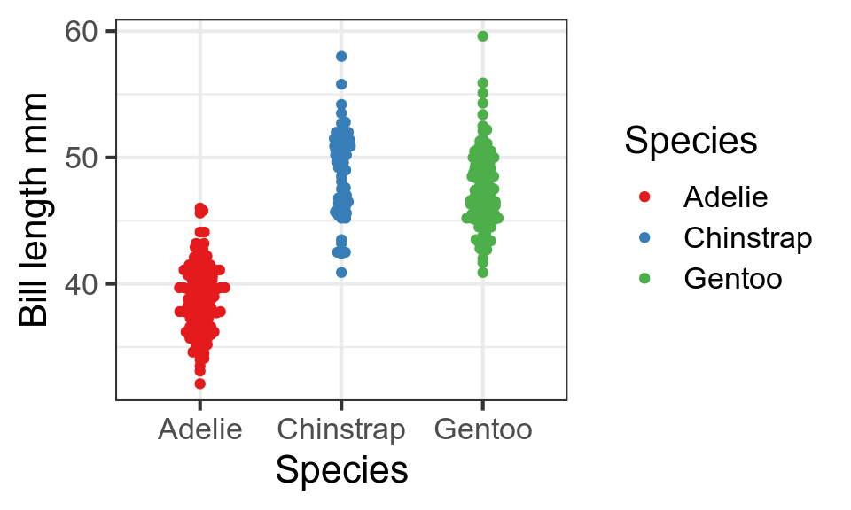

Data lifecycle
Bio300B Lecture 1
Richard J. Telford (Richard.Telford@uib.no)
Institutt for biovitenskap, UiB
29 August 2022
Why do biologists need statistics anyway?
Why do YOU need
- data handling skills
- data visualisation skills
- statistics skills
Biology is applied data science!
- Nearly all papers include data visualisation and analysis
- Need to be able to understand the methods used to evaluate paper
- Need to be able to make visualisations and analyses for papers, reports, theses
Changing expectations
- FAIR and open science
- Reproducible research
Data life-cycle
Experimental Design
Lecture 4
- Observational studies vs experiments
- Randomisation
- How many replicates do you need?
- Statistical traps
Data entry
Make your data easy to import.
Proof read & data validation
Lock data file. No more edits.
Spreadsheets
Practical recommendations for organizing spreadsheet data to reduce errors and ease later analyses.
- be consistent
- write dates as YYYY-MM-DD
- do not leave any cells empty
- put just one thing in a cell
- organize the data as a single rectangle (rows = subjects; columns = variables; single header row)
- create a data dictionary
- do not include calculations in the raw data files
- do not use font, colour or highlighting as data
- choose good names for things
- use data validation to avoid data entry errors
- save the data in plain text files.
Examples
When is 1-9-2021?
Sex coded as 0 & 1
Data importing
R can import almost any data type.
- CSV files with
readr - Excel files with
readxl - shapefiles with
sf - NetCDF with
ncdf4
Data cleaning
- Process your data with code
- Reproducible analyses
tidyverse(Lecture 2)
Visualise with ggplot2
Data analysis
Huge number of statistical methods
This course will focus on
- Exploratory data analysis (5)
- Descriptive statistics (5)
- Linear models (6-7)
- Generalised linear models (8)
- Mixed effect models (9)
- Survival analysis (10)
Communicate results with quarto
Tradition
- text in Word, code in R
- copy figures, tables etc into Word
- find mistakes. Return to step 2.
quarto markdown
- Code and text interwoven
- Reproducible, dynamic documents
- This presentation made with quarto
Data death

Natural degradation in information content associated with data and metadata
Empirical evidence of data loss

What would happen if you lost all of your research data?
I was focussed on creating high resolution, 3D time lapse videos of developing crustacean embryos, so all of my work was digital-based. When I lost my laptop and backups, I lost 400GB of data and close to four years of work. As a direct result I ended up getting an MPhil rather than the PhD I’d been working towards. I was hoping to have an illustrious career in science and for a time it seemed like everything would be stopped in its tracks.

Obsolescent storage equipment
Back up your raw data!
- Keep raw data
- Multiple places
- Physical and cloud services
- Be paranoid!
Archiving data
Many research funders and journals demand data archiving.
Special problems
Sensitive data
Examples
Solutions
Data management plans
How data are to be collected and handled both during a research project, and after the project is completed
Write one before you start work.

FAIR principles
- Findable
- Accessible
- Interoperable
- Reusable
Meta data is as important as data.
Why ?
- free
- open source
- large and friendly user community
- many statistical methods implemented
- makes publication ready figures
- reproducible research
- code is easy to share and publish.
R GUI

You probably never need to open R directly.
RStudio IDE

Getting the best out of RStudio
- projects
- keep track of everything
- code completion
- bracket matching
Getting help
?length - find function length in open packages
??length - help search
Google error messages